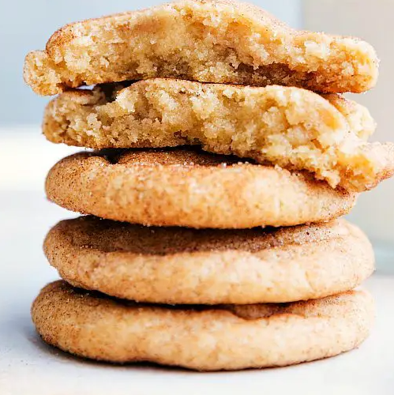

Snickerdoodles

Here is a picture of the finished product
Ingredients list:
Cookies
- 6 tablespoons (1 cup) unsalted butter 80% the way melted
- 2/3 cup (135g) white sugar
- 2/3 cup (120g) light brown sugar packed
- 1 large egg
- 1 large egg yolk
- 1/2 tablespoon pure vanilla extract
- 2 and 3/4 cup (337g) all-purpose white flour
- 1 and 1/2 teaspoons cream of tartar
- 1/2 teaspoon salt
- 1 teaspoon baking soda
- 3/4 teaspoon ground cinnamon
Cinnamin Sugar Coating
- 1/4 cup (50g) white sugar
- 3 teaspoons ground cinnamon
Steps
- Place the 80% melted butter, sugar, and brown sugar in a large bowl and whisk together until smooth. Add in 1 whole egg and 1 egg yolk (reserve the white for a separate recipe or discard) and the vanilla extract. Whisk until just combined and smooth.
- In another bowl, stir together the flour, cream of tartar, salt, baking soda, and 3/4 teaspoon ground cinnamon.
- Add all of the dry ingredients into the wet ingredients and mix until JUST combined. Do not overmix the dough. Cover tightly and refrigerate for 45 minutes to 1 hour.
- Preheat the oven to 325 degrees F. (If you have a convection oven, do 325 degrees F at convection bake). In a small bowl, stir together the white sugar and cinnamon.
- Remove the dough and roll tall balls of dough. (See the second photo in the post for an example.) If you have a kitchen scale, the balls of dough should be about 1.7 ounces. Roll the balls of dough generously into the cinnamon-sugar mixture.
- Place dough balls on a parchment or Silpat-lined sheet pan and bake for 9-11 minutes. Watch carefully to be sure they don't overbake. (I think slightly under-baked Snickerdoodles are the BEST!)
- Remove and let stand on the cookie sheet for 2 minutes before removing to a cooling rack.
- Cookies are best when enjoyed within 2-3 days.